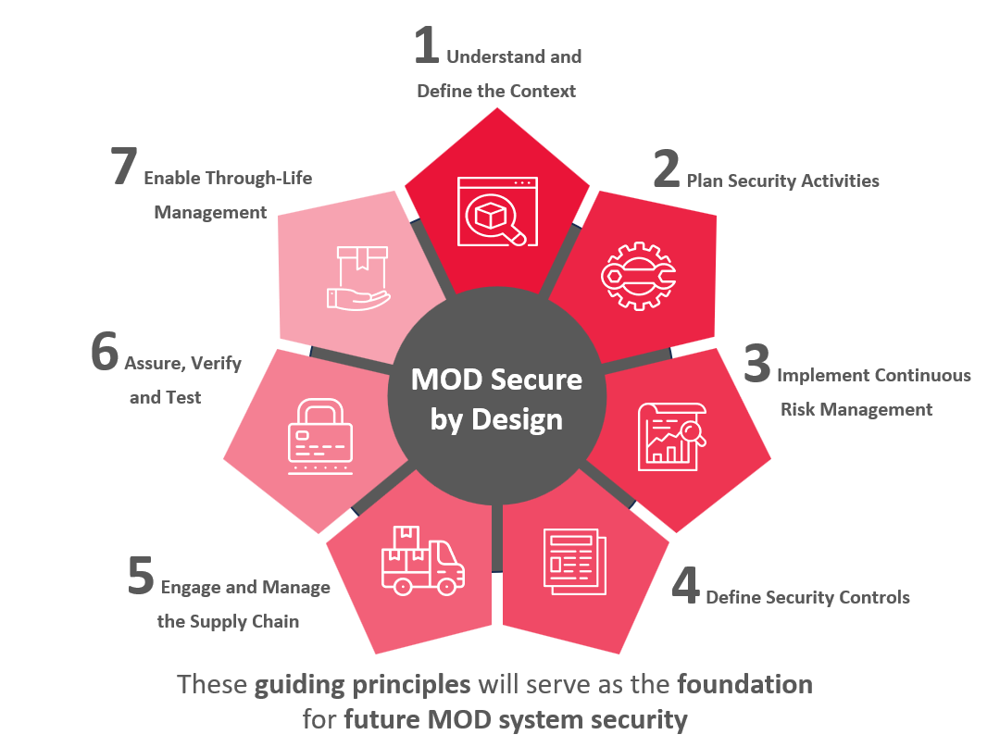

tähendab tarkvaratehnikas seda , et tarkvaratooted ja võimalused
on loodud põhimõtteliselt turvaliseks .
Alternatiivseid turbestrateegiaid, taktikaid ja mustreid arvestatakse
tarkvara kavandamise alguses ning arhitektuur valib välja ja jõustab
parimad ning neid kasutatakse arendajatele juhtpõhimõtetena .
Samuti soovitatakse kasutada strateegilisi disainimudeleid, millel
on turvalisusele kasulik mõju , kuigi need kujundusmustrid ei olnud
algselt välja töötatud turvalisust silmas pidades.
Secure by Design on muutumas üha enam peamiseks arendusmeetodiks
tarkvarasüsteemide turvalisuse ja privaatsuse tagamiseks. Selle
lähenemisviisi puhul arvestatakse turvalisust ja see on süsteemi
sisse ehitatud igas kihis ning see algab tugevast arhitektuurilisest
disainist. Turvaarhitektuurse disainilahenduse otsused põhinevad
tuntud turvastrateegiatel, taktikatel ja mustritel, mis on määratletud
kui korduvkasutatavad tehnikad konkreetsete kvaliteediprobleemide
saavutamiseks.
Joonis:

Näide ühest case-vahendist:QWASP
Head ja vead
| Head | Vead |
|---|---|
| Suurem töötõhusus. | Probleem müüja vastutusega |
| Jõupingutused ja eelarve saab keskenduda sellele, mis on oluline. | Kulud ja keerukus |
| Oluliselt vähenenud elukulud. | Turvaline disain: tänamatu ülesanne |